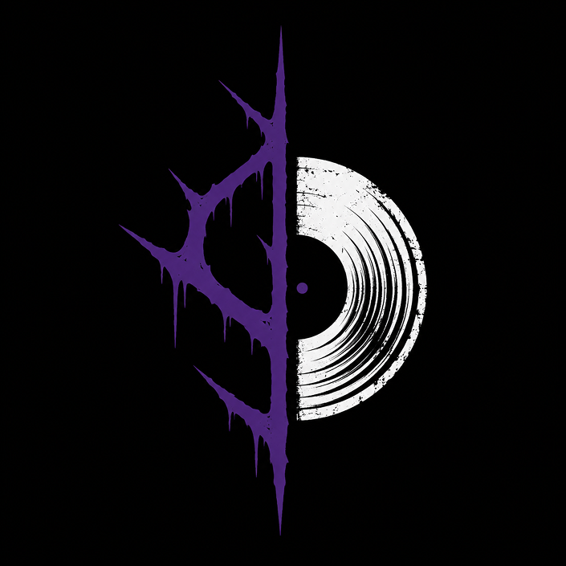

Sobre Nós

Nossa história
A SvartVinyl nasceu da paixão pelo Black Metal e pela experiência única que apenas um disco de vinil pode proporcionar. Mais do que uma loja, somos um ponto de encontro para aqueles que enxergam a música como arte, identidade e expressão. Nosso catálogo reúne álbuns clássicos, lançamentos recentes, edições limitadas e raridades cuidadosamente selecionadas para atender colecionadores, apreciadores e novos ouvintes do gênero. Buscamos oferecer obras que representam diferentes vertentes do Black Metal, desde as raízes mais tradicionais até os caminhos mais experimentais e atmosféricos. Acreditamos que ouvir um LP é um ritual. Retirar o disco da capa, observar a arte, posicionar a agulha e ouvir cada faixa da forma como foi concebida cria uma conexão que vai além do simples consumo musical. Em uma era dominada pelo digital, o vinil preserva a essência da experiência sonora.

Nossa Identidade
O nome SvartVinyl combina a palavra sueca svart ("preto") com vinyl, representando tanto a estética sombria do gênero quanto o formato físico que mantemos vivo. Nossa identidade é construída sobre autenticidade, respeito à cultura underground e valorização da música em sua forma mais tangível. Seja para encontrar aquele álbum que marcou sua vida, descobrir novos artistas ou expandir sua coleção, a SvartVinyl está aqui para conectar você ao lado mais obscuro e genuíno da música extrema.